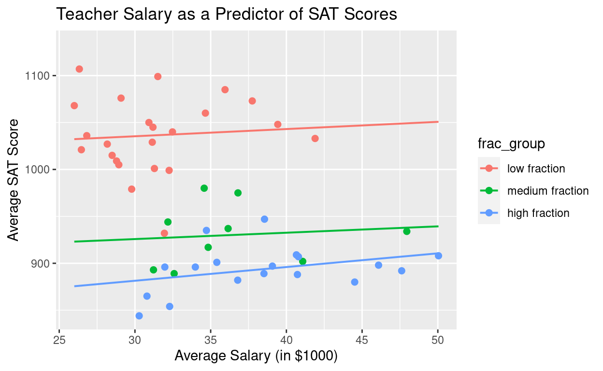

The Setup
Real data analysis happens with more than one or two variables at a time. We have covered the basics for a lot of different scenarios, but we will end this semester with some examples of variable combinations we haven’t seen.
Single Regression with a categorical variable
Multiple regression with more than 2 numeric variables
Multiple regression with categorical variables
I won’t ask you to read all of Ch. 6, and I won’t cover everything in this tutorial. But I do want it to serve an an example of what you can do with more complex data, possibly in your projects or as a teaser for what you would do in Stat 272: Statistical Modelling.
Regression with a Categorical Variable
We already have a way to analyze one numeric response and one categorical explanatory, t-test for the difference in two means or ANOVA for more than two means. But we can actually do an equivalent analysis using regression to get the same results. I’ll show you an example as a way to develop our thinking about categorical variables in a regression model.
Response Variable: Numeric
Explanatory Variable: Categorical (2+ levels)
Example - Mario Kart
The dataset mario_kart contains the price of 143 internet auctioned Mario Kart games for Nintendo Wii in October 2009. See the raw data below.
mario_kartAmong the variables is one called cond for the condition of the game (“new” or “used”). One research question we may have is to see if the average total price is the same for new and used Mario Kart games. Run the two means t-test for totalPr and cond in R. Report the test statistic, p-value, and conclusion of the test.
Add the argument
var.equal = TRUEto yourt.testfunction. This will assume that the population prices have the same spread for new and used games and will make the comparison to regression nicer.
t.test(_________ ~ _________, data = __________, var.equal = TRUE)Now with regression
How could we possibly perform this analysis using regression? We need two numeric variables to create a line. Well, our option is to force the categorical variable into a numeric one by making a dummy variable. This is just a way for us to assign numbers to the different levels of the categorical variable. Run the code below to compare the side-by-side boxplots (using cond as categorical) and the scatterplot (where we force cond to be numeric).
bwplot(totalPr ~ cond, data = mario_kart)
## notice the as.numeric() function to force the variable type
gf_point(totalPr ~ as.numeric(cond), data = mario_kart)Now it’s just a matter of running the regression analysis exactly like we would for two numeric variables. Try to get the regression slope and intercept estimates using lm(). Note that R will automatically change categorical variables to numeric for this function, so you don’t need to use as.numeric() when fitting the model.
mario_model <- lm(_______ ~ ________, data = _________)
summary(________)What sort of similarities do you see when comparing the linear regression output to the t-test output?
Essentially, we ran the same statistical test when we performed the two sample t-test and the regression analysis. Consider the output again:
##
## Two Sample t-test
##
## data: totalPr by cond
## t = 8.6619, df = 139, p-value = 1.056e-14
## alternative hypothesis: true difference in means is not equal to 0
## 95 percent confidence interval:
## 8.411621 13.387540
## sample estimates:
## mean in group new mean in group used
## 53.77068 42.87110##
## Call:
## lm(formula = totalPr ~ cond, data = mario_kart)
##
## Residuals:
## Min 1Q Median 3Q Max
## -13.8911 -5.8311 0.1289 4.1289 22.1489
##
## Coefficients:
## Estimate Std. Error t value Pr(>|t|)
## (Intercept) 53.7707 0.9596 56.034 < 2e-16 ***
## condused -10.8996 1.2583 -8.662 1.06e-14 ***
## ---
## Signif. codes: 0 '***' 0.001 '**' 0.01 '*' 0.05 '.' 0.1 ' ' 1
##
## Residual standard error: 7.371 on 139 degrees of freedom
## Multiple R-squared: 0.3506, Adjusted R-squared: 0.3459
## F-statistic: 75.03 on 1 and 139 DF, p-value: 1.056e-14Notice that:
The intercept estimate (53.77) is the same as the sample mean price for
newgames.The slope estimate (-10.90) is the same as the difference between the two sample means.
The test statistics (\(\pm\) 8.66) are the same (other than the sign).
The p-values (\(\approx\) 0) are the same.
Isn’t this COOL?!
When we interpret the regression equation, we want to think about cond as having a baseline value of “new”. Meaning the intercept represents the average price for all new games. And if we consider “used” as a one unit increase in cond, then the slope should make sense. As we move from new to used games on our regression plot, we expect the average price to drop by $10.90 (the same difference in the sample means from the t-test). The test statistic and p-value confirm in both analyses that there is really a difference in the average prices of new and used games.
Multiple Regression
Just add predictors
Do you think more than one variable may be contributing to the response variable? You’re probably right! There are lots of additional explanatory variables we may want to consider. To include them in the analysis, we just add them into our model.
Maybe nBids helps play a role in the price of Mario Kart games? Maybe the sellerRate is a good predictor? Let’s consider them!
First off, we should always remember to visualize and summarize the sample data before creating the regression model. Unfortunately, humans aren’t that great at really being able to see relationships beyond 2-dimensions (sometimes you can see it in 3D, but it’s often difficult). That means we will have to consider individual scatterplots for the response and explanatory variables we want to include. But it’s really just a way for us to get a first look and rule out any curved or other non-linear patterns.
You could do separate gf_point() plots for each of the pairs of variables. But you’ve made it through a semester of 212, so I’ll give you a better way to do it in R:
## Note this function requires a new package called `GGally`
## It will work in this tutorial, but if you want to do something similar
## in your account on the R server, you need to install it (just once) with:
# install.packages("GGally")
# load with library(GGally) and library(dplyr) before using the function ggpairs()
mario_kart %>%
select(totalPr, nBids, sellerRate) %>% # just take the variables we want from the full dataset
ggpairs()So, you can see from the plots, there isn’t a great relationship between total game price and either the number of bids or the seller rating. The correlations are low and the scatterplots don’t look great. But we can still fit and interpret a multiple regression model!
We just want to add the explanatory variables into the right side of the equation in R: lm(Resp ~ Expl1 + Expl2 + ..., data = dataset_name).
mario_multreg <- lm(totalPr ~ nBids + sellerRate, data = mario_kart)
summary(mario_multreg)Model and Interpretations
So we would write our regression equation as (just be careful with the scientific notation):
\[\widehat{totalPr}=48.59-0.11\cdot nBids+0.000018\cdot sellerRate\]
The interpretation for each of the explanatory variable coefficients is the same as our interpretation for slope in a single regression equation, but we need to consider all other explanatory variables as constant.
For every extra bid in the auction, with seller rate held constant, we would expect the total price to decrease by $0.11 on average.
For every extra point in the seller rate, with the number of bids held constant, we would expect the total price to increase by $0.000018.
Testing the predictors
We can also run the hypothesis tests exactly the same way for each predictor as we would in an individual regression equation. For our example, there is not sufficient evidence to suggest that the number of bids (t = -0.806, p = 0.422) or the seller rate (t = 1.214, p = 0.227) are significant predictors of the total price of the game.
So this particular model isn’t very useful…
Check the conditions
Multiple regression models have the same conditions as single regression models, and we check them the same way. For our example things look alright, there’s a little group of observations that are away from the pack on the right and seem a little strange. But no condition looks terribly violated.
Confidence Intervals and Predictions
Once we have the model, the rest is the same as we’ve seen with one explanatory variable. We can find confidence intervals for the variable coefficients.
confint(mario_multreg)We can also create confidence and prediction intervals for expected total price at a specific combination of explanatory variable values. What would the average price be for all games that have 5 bids from a seller with a 1000 seller rating? And what is the expected price for a single game with those values?
(Keep in mind, this model doesn’t work very well, we’ve shown the variables are not good predictors. I’m just illustrating how the code works.)
pred_at <- data.frame(nBids = 5, sellerRate = 1000)
predict(mario_multreg, pred_at, interval = "confidence")
predict(mario_multreg, pred_at, interval = "prediction")CAUTION: Multicollinearity
One of the biggest challenges when we start adding in multiple variables is the possibility that those variables are related to each other, in addition to the response variable. This is called multicollinearity. We want to avoid this if possible and consider keeping track of the interactions between each of the explanatory variables. Something to keep in mind when interpreting a multiple regression model. How to handle these situations is covered in Stat 272.
Another Example
Here we consider the average SAT scores for all 50 states and the average teacher salary (in $1000s). The data are below along with the simple linear regression output.
SAT
## A few extra bells and whistles in this plot like title and axis labels
gf_point(sat ~ salary, data = SAT, size = 2,
title = "Teacher Salary as a Predictor of SAT Scores",
xlab = "Average Salary (in $1000)", ylab = "Average SAT Score") %>%
gf_lm()
sat_model1 <- lm(sat ~ salary, data = SAT)
summary(sat_model1)Dig a little deeper
Can it really be true that states with higher teacher salaries have students who perform worse on the SAT? Would cutting pay help a state raise it’s average SAT score?
Not so fast, there are other variables to consider here. This one relationship isn’t telling the entire story.
Another variable in the dataset is called frac_group which represents the percentage of high school students in that state who take the SAT. The break down for frac_group is as follows:
| Percent who take SAT | frac_group value |
|---|---|
| 0% - 22% | low fraction |
| 22% - 49% | medium fraction |
| 49% - 81% | high fraction |
*81% is the highest observed percentage
Can you tell any difference in the trends by viewing the scatterplot with different colors for the fraction group?
gf_point(sat ~ salary, data = SAT, size = 2, color = ~frac_group,
title = "Teacher Salary as a Predictor of SAT Scores",
xlab = "Average Salary (in $1000)", ylab = "Average SAT Score")Multiple Regression model
Fit the model for SAT scores using salary and fraction who take the test.
sat_model2 <- lm(_____ ~ ______ + ______, data = ________)
summary(_________)Comparing Models
Using \(R^2\) to compare different models for the same response is a great way to decide which is better at “fitting” the data. A model with a higher \(R^2\) can explain more of the variation in the response and so should be preferred.
But be aware that adding more variables to the model will always increase the multiple \(R^2\) value. Even if the variables are bad predictors it will increase just a tiny bit. That’s why you should always consider the adjusted \(R^2\) when comparing models. We adjust it by decreasing the \(R^2\) a little bit for every extra explanatory variable. That way the added variable must be a significant predictor in order to improve the “fit” while overcoming the “penalty”.
So how would we read this new model? It looks like there are two new variables in the R output, frac_groupmedium fraction and frac_grouphigh fraction. What happened to the low group and what do the coefficient estimates mean?
##
## Call:
## lm(formula = sat ~ salary + frac_group, data = SAT)
##
## Residuals:
## Min 1Q Median 3Q Max
## -105.029 -19.817 -1.205 13.778 76.088
##
## Coefficients:
## Estimate Std. Error t value Pr(>|t|)
## (Intercept) 1002.2448 31.7941 31.523 < 2e-16 ***
## salary 1.0889 0.9882 1.102 0.276
## frac_groupmedium fraction -111.7424 14.2902 -7.820 5.46e-10 ***
## frac_grouphigh fraction -150.3789 12.8353 -11.716 2.09e-15 ***
## ---
## Signif. codes: 0 '***' 0.001 '**' 0.01 '*' 0.05 '.' 0.1 ' ' 1
##
## Residual standard error: 34.09 on 46 degrees of freedom
## Multiple R-squared: 0.8051, Adjusted R-squared: 0.7924
## F-statistic: 63.35 on 3 and 46 DF, p-value: 2.287e-16
The way to interpret this is to think about how many levels our categorical variable has (3 levels in this case). One of those levels will always be the “baseline” and is represented by the intercept coefficient. The other levels will get their own dummy variables and the coefficient estimates represent the average difference between that level and the baseline. So for our example, we would read the output above as:
The average SAT score for states that have a
low fractionof students taking the test is 1002.24.The average SAT score for states that have a
medium fractionof students taking the test is 111.74 points below the low fraction states, or 890.5.The average SAT score for states that have a
high fractionof students waking the test is 150.38 points below the low fraction states, or 851.86.With all else being held constant, for every extra $1000 in the average state teacher salary, we can expect SAT scores to increase by 1.09 points (but salary is not a good predictor in this model).
At first glance, these interpretations might not make sense. But consider that in some states (like East coast states) many colleges require SAT scores and therefore a large percentage of students, good and bad, will take the SAT to try and get into school. For other states where the SAT is not required, usually only the better students end up taking the SAT. So low fraction represents the best students taking the test.
And at least we have a reason explaining the strange relationship in the first model. The confounding variable of how many students take the SAT could have led to some poor policy decisions and cuts to state education departments.
Conditions
Feel free to check the conditions for this model. Some potential issues (Normality maybe), but overall not too bad.
par(mfrow=c(2,2))
plot(sat_model2, which = 1:3)
hist(sat_model2$residuals)End of Material
This is where we will stop for our content this semester. But there are still lots of really fun types of analysis and modeling you can do with data that we haven’t covered.
Logistic Regression: Categorical response and numeric explanatory.
Machine Learning: Improving models based on incoming data.
Advanced regression techniques: Like LASSO, Ridge regression, and others for more accurate models or when conditions are not met.
Advanced ANOVA: Two-way ANOVA, Interactions, MANOVA, ANCOVA, nonparametric techniques.
Data Viz: Lots more we can do with visualizing data using heat maps, geographical maps, 3D modeling, music, taste, the options are endless!
I really hope you consider taking more stats classes at St. Olaf!